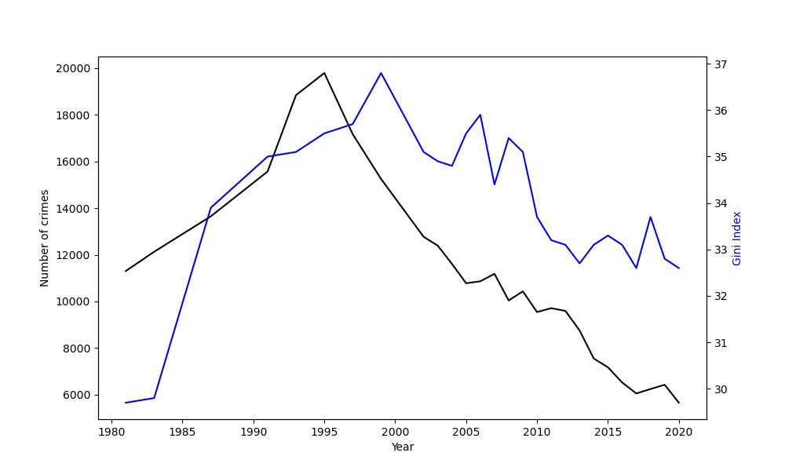
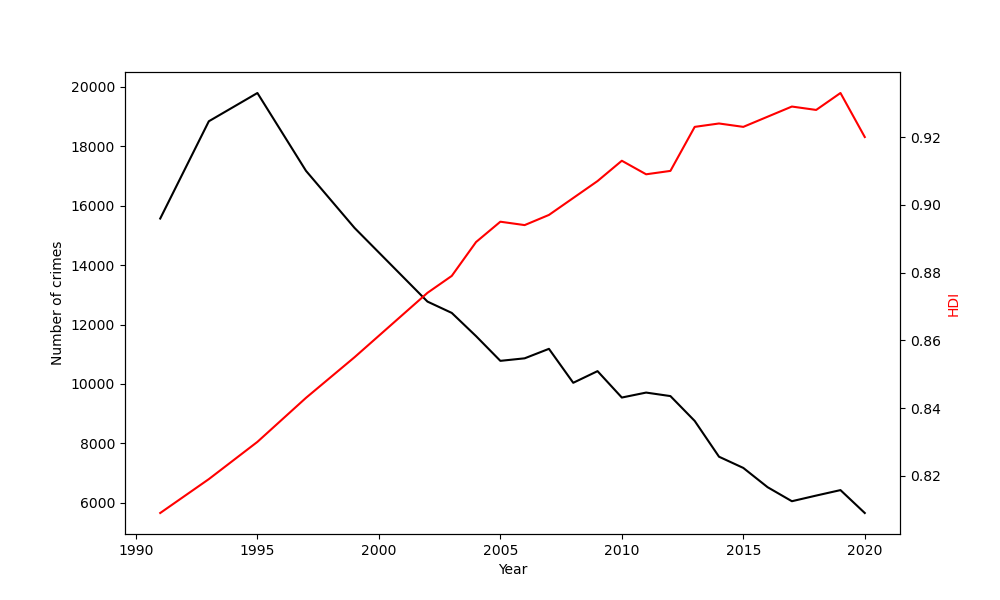

There can be many reasons why a person could choose to commit crime, such as social unrest and dissatisfaction with quality of life. In this post I will explore some of the most likely reasons and attempt to model the relationship between them.
First I observed the correlation between several factors and crime rate across many countries in the world. The values I used were the most recent available, meaning stat is available for most countries in the world.

The first factor which has been tested against crime rate is the Gini Coefficient, which is a representation of income inequality measured as a percentage (%). I chose to test this variable because income inequality may increase the incentives for crime such as robbery as poor people may see an opportunity in robbing the rich or become jealous. This variable was tested against the crime index which is taken as the number of crimes per 10000 people. Each dot on the scatter diagram represents data for a country with data available by 2025, with a line showing the regression, and the shaded area represents the 95% confidence interval. This graph suggests a clear positive correlation between the two variables as they both increase together. However, there is still some spread in the results meaning there may be other factors that influence crime other than income inequality.
To test this correlation in a more objective way, I calculated the Pearson correlation coefficient and the p-value to test for statistical significance. The result of the coefficient was around 0.55, which can be interpreted as a moderate positive correlation, and the p value was lower than 0.05 meaning at the 5% significance level the correlation is significant. I also calculated the regression coefficient for single linear regression which came out to 1.04 (2dp).
The next variable I wanted to test for correlation was GDP per capita, measured as the GDP divided by the population at current US prices($). This variable was chosen as less money available may result in it being harder to afford a living, so people may turn to crime. This graph suggests some loose correlation, however at lower levels of GDP per capita the crime index varies greatly, so we cannot say from the graph alone that a lower GDP per captia will lead to an increase in crime. The regression line may not be as useful for this graph either, as most of the data values are concentrated on the lower end of GDP per capita and few have high values. I still calculated a correlation coefficient, which came out to -0.0003.
I performed the same tests for correlation on this graph. This time the correlation coefficient came out to around -0.44 (2dp) which suggests a weak negative correlation. The p value was still significant at the 5% significance level.
The last variable I wanted to test is HDI, measured using the 2010 method by averaging GNI (gross national income), education index and life expectancy. I chose this as discontent in quality of life may turn to crime. This graph shows there is a clear negative correlation between HDI and crime. However there is still a large amount of spread in this result, and this may be partially because the measure used to determine HDI from 2010 is not the most robust method for measuring quality of life as it only considers 3 variables. The correlation coefficient for HDI on crime is -66.09.
For this test of significance test the corelation coefficient I received was -0.6 (2dp), the strongest so far. The p value was also significant, leading to the conclusion that HDI may be the biggest factor that affects crime based on this data.
In the next section I will provide visualisation of how these variables move together over time. I chose the UK for this as data is readily available for all statistics for the past 40 years, and the country also has its issues with income inequality and crime, as well as being a growing economy. For this I will not calculate the correlation coefficients as I feel this could be biased because we are only taking information from a developed economy, and the statistic for crime I have found may not be perfect as it measures the total amount of crimes committed rather than proportional, so it can be affected by factors such as population growth.
This graph shows the crime rate and Gini statistics in the UK between 1980 and 2020. Crime in this graph is measured by number of crimes. This shows some evidence of the two variables moving together over time, as they both increase together in the first few years, with crime peaking around 1995 and Gini a few years later, after which crime sharply declines accompanied by a decline in the Gini index.
Here we can observe the movement of crime rate and GDP per capita in the UK over time. At first the two variables do not conform to our previous observations, as they are both increase together. After 1995, the two variables move in opposite directions, and the sharp decrease in crime is halted around the same time GDP per capita drops between 2005-2010 which is some evidence to support the negative correlation, but overall I do not think this graph provides sufficient evidence.
This graph shows how crime rate moves together with HDI. Between this graph and the previous 2, this one definitely has the strongest evidence of correlation between the two variables, as apart from the increase in crime between 1990 and 1995, they are moving in opposite directions for most of the time.
For the last section I would like to attempt to create a multiple linear regression model for the variables we have analysed. To assure the model is accurate it needs to be checked for multicollinearity and heteroskedasticity.

To test for multicollinearity, I first ran a correlation test on the explanatory variables. The GDP per capita and HDI correlation could cause some cause for concern, as there is a strong correlation between them, which makes sense as gross national income is included in the HDI calculations.
To find out if it is appropriate to include these variables together I calculated the variance inflation factor. This calculates how much of the variance of a regression coefficient is inflated due to correlation with another variable. A VIF higher than 5 is a cause for concern, and from this table we can see that VIF is lower than 5 for these variables, so it should be ok to proceed.
Next I tested for heteroskedasticity using the Breusch pagan test. Heteroskedasticity is where the variance of the error term is not constant across all levels of independent variables. This violates an assumption of linear regression models which would mean the model is not accurate. The p value I got was 0.63 (2dp). A p value of lower than 0.05 would mean heteroskedasticity, so the model is also ok in this regard.
The final model comes out to crime index = 51.58 + 0.71Gini – 39.90HDI -2.66x10^-5GDPperCapita.